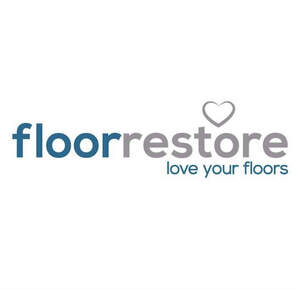
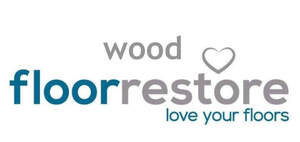

Trade Mark Journal No.2025/033 15 August 2025
UK00004212173 1 June 2025 (37,40)
Mark 1

Mark 2

Mark 3
Mark 4
Mark 5
- Class 37
- Repair of floor coverings; Restoration (Furniture -); Cleaning of floor coverings; Floor sanding; Floor polishing; Floor maintenance services; Cleaning of floor surfaces; Floor coating services; Parquet floor laying; Remedial services for floor coverings; Construction of floors; Rental of floor cleaning machines; Fitting of floor coverings; Maintenance and repair of flooring; Preparation of floor surfaces for lining and covering; Maintenance of wood flooring; Floor layering; Providing information relating to the repair or maintenance of power-driven floor cleaning machines; Laying floor tile; Repair or maintenance of power-driven floor cleaning machines; Painting restoration services; Cleaning of building exterior surfaces; Repair of wood flooring; Cleaning of building interiors.
- Class 40
- Surface polishing; Surface grinding; Blast treatment of a surface (Services for the -).
Floor Restore Limited